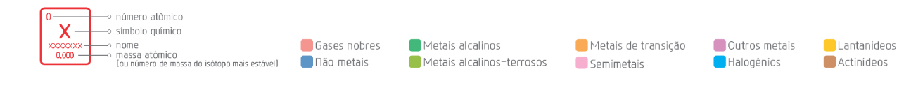

Tabela Periódica
1
H
hidrogênio
1,008
2
He
hélio
4,0026
3
Li
lítio
6,941
4
Be
berílio
9,0122
5
B
boro
10,81
6
C
carbono
12,011
7
N
nitrogênio
14,007
8
O
oxigênio
15,999
9
F
flúor
18,998
10
Ne
neônio
20,180
11
Na
sódio
22,990
12
Mg
magnésio
24,305
13
Al
alumínio
26,982
14
Si
silício
28,085
15
P
fósforo
30,974
16
S
enxofre
32,06
17
Cl
cloro
35,45
18
Ar
argônio
39,948
19
K
potássio
39,098
20
Ca
cálcio
40,078
21
Sc
escândio
44,956
22
Ti
titânio
47,867
23
V
vanádio
50,942
24
Cr
cromo
51,996
25
Mn
manganês
54,938
26
Fe
ferro
55,845
27
Co
cobalto
58,933
28
Ni
níquel
58,693
29
Cu
cobre
63,546
30
Zn
zinco
65,38
31
Ga
gálio
69,723
32
Ge
germânio
72,630
33
As
arsênio
74,922
34
Se
selênio
78,971
35
Br
bromo
79,904
36
Kr
criptónio
83,798
37
Rb
rubídio
85,468
38
Sr
estrôncio
87,62
39
Y
ítrio
88,906
40
Zr
zircônio
91,224
41
Nb
nióbio
92,906
42
Mo
molibdênio
95,95
43
Tc
tecnécio
[98]
44
Ru
rutênio
101,07
45
Rh
ródio
102,905
46
Pd
paládio
106,42
47
Ag
prata
107,87
48
Cd
cádmio
112,41
49
In
índio
114,82
50
Sn
estanho
118,71
51
Sb
antimônio
121,79
52
Te
telúrio
127,60
53
I
íodo
126,90
54
Xe
xenônio
131,29
55
Cs
césio
132,905
56
Ba
bário
137,33
57-71
L
lanta
0000
72
Hf
háfnio
178,49
73
Ta
tântalo
180,948
74
W
tungstênio
183,84
75
Re
rênio
186,207
76
Os
ósmio
190,23
77
Ir
irídio
192,217
78
Pt
platina
195,084
79
Au
ouro
196,97
80
Hg
mercúrio
200,59
81
Tl
tálio
204,38
82
Pb
chumbo
207,2
83
Bi
bismuto
208,98
84
Po
polônio
[209]
85
At
ástato
[210]
86
Rn
radônio
[222]
87
Fr
frâncio
[223]
88
Ra
rádio
[226]
89-103
A
Acti
1111
104
Rf
rutherfórdio
[267]
105
Db
dúbnio
[268]
106
Sg
seabórgio
[269]
107
Bh
bóhrio
[270]
108
Hs
hássio
[277]
109
Mt
meitnério
[278]
110
Ds
darmstádtio
[281]
111
Rg
roentgênio
[281]
112
Cn
copernício
[285]
113
Nh
nihônio
[286]
114
Fl
fleróvio
[289]
115
Mc
moscóvio
[289]
116
Lv
livermório
[293]
117
Ts
tenesso
[294]
118
Og
oganessônio
[294]
57
La
lantânio
138,91
58
Ce
cério
140,12
59
Pr
praseodímio
140,91
60
Nd
neodímio
144,24
61
Pm
promécio
[145]
62
Sm
samário
150,36
63
Eu
európio
151,36
64
Gd
gadolínio
157,25
65
Tb
térbio
158,93
66
Dy
disprósio
162,50
67
Ho
hólmio
164,93
68
Er
érbio
167,26
69
Tm
túlio
168,93
70
Yb
itérbio
173,05
71
Lu
lutécio
174,97
89
Ac
actínio
[277]
90
Th
tório
232,04
91
Pa
protactínio
231,04
92
U
urânio
238,03
93
Np
netúnio
[237]
94
Pu
plutônio
[244]
95
Am
amerício
[243]
96
Cm
cúrio
[247]
97
Bk
berquélio
[247]
98
Cf
califórnio
[251]
99
Es
einstênio
[252]
100
Fm
férmio
[257]
101
Md
mendelévio
[258]
102
No
nobélio
[259]
103
Lr
laurêncio
[262]
